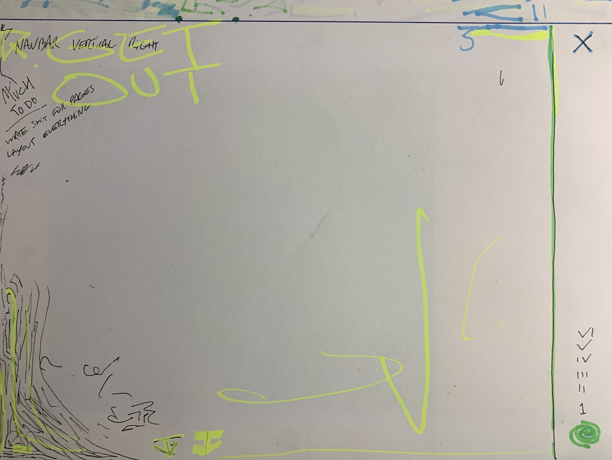
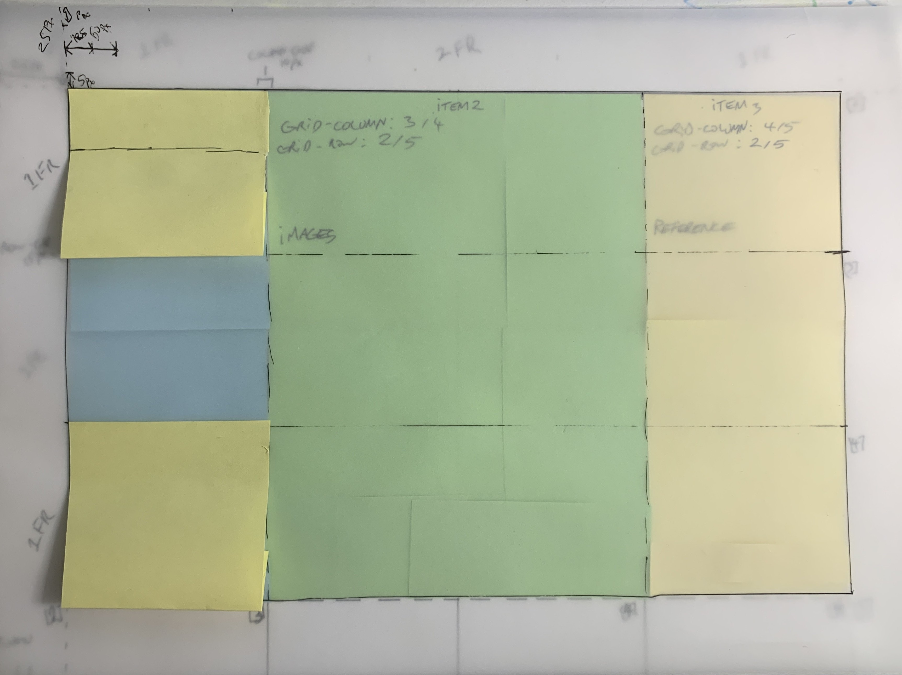
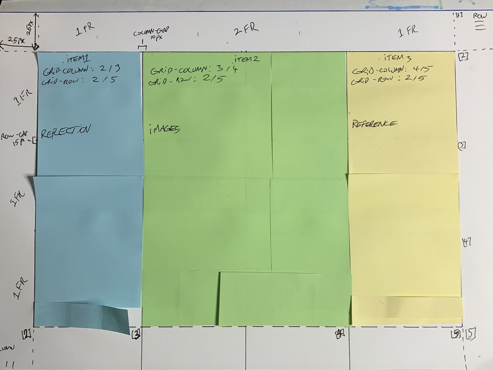

restyling the website by strengthening grid, adjusting palette and sizing. this is a test of the new grid system, this has taken a lot of time. firstly, i removed the top navbar. as said in the feedback, it was not working well within the site. the sizing of the back button and the page title were mismatched. i wanted the new menu to extend from the bottom up, like a plant growing.
~
i have adjusted the palette to make it less harsh in areas to improve readability. to make the site seem less erratic, i have changed some colours that were contrasting too much or not working. i have also changed the sizing of the text and buttons to make them more readable. the text colour has now been changed to a lighter blue colour, rather than the sandy orange it was before.
~
this new grid system allows me to create seperate items that can start and end at the different columns and rows. This allows me to create a more dynamic layout, that is more effective as the text can now be nested in different containers.
~



links
development work, photos are mine.
//sketch
~ dots overload
p5.js sketch made in class influenced by class visit to the kusama exhibition at NGV.
adapted from in-class demo, adjusted for webpage integration assisted by gemini. this has helped greatly for structuring my code in a functioning way as it uses the p5.js instance mode, also for troubleshooting for flexability.
//past work
~
last year i took the word as image in space & time subject, in this we created sketches in processing. to refamiliarise myself, i looked back at my previous work. we were tasked to create a monogram and self-portrait i created a simple monogram, but took one of the in-class demos further to create a drawing tool that uses type.
works by me, drawing tool is currently unavailable.